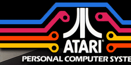
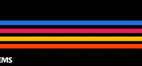
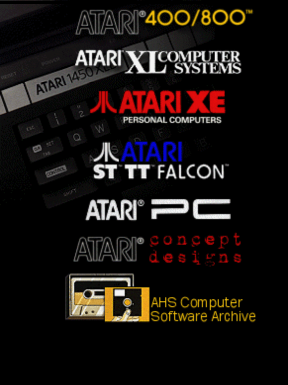

|  |
|

|
Stella grows up: In the Summer of 1977 the team that had finished the Atari VCS was now hard at work on ways to make the "STELLA" chip more capable and to give the Atari VCS more features like the ability to display characters on the screen, have possibly some kind of keyboard and better graphics. What started out as making a new generation video game system to replace the 2600 would instead turn into a whole new Computer Division. Making computer systems was the next logical step for the company, however the home computers never actually started out as home computers in the beginning. They were supposed to be a better video game system and as the designs evolved - more memory, better graphics, DMA, I/O systems, keyboard and a design that would have actually had a built in monitor. The game systems turned into full blown computers. Well, that is to say at least one design - Colleen was a full blown computer. Candy, her little sister was still in debate as to whether she should be just a game only system with no I/O port and no Keyboard or to have them. Just before the deadline approached for Atari to show off its new systems for the Winter CES in January of 1979 the decision was made - Candy would be an entry level computer. Atari would not have a new video game system to replace the Stella. Upon reflection, one could wonder if this was Atari's worst decision. After all the idea of a better "STELLA" - Atari VCS was the whole reason for the work started in 1977, to have a replacement for the Atari VCS when its expected end of life would be reached around 1980. The Candy could've been the replacement for the Atari VCS in 1980 in a case with no keyboard and no SIO port and would've been Atari's next game system. Applications and serious programs could've been for the Atari 800, while the Atari 400 would've gotten a different name - perhaps it would've been the Atari Advanced Game System or something similar, it would've gotten all of the games written for it. Imagine a 1979 release of Space Invaders on it instead of the Atari 2600, or Pac Man on it instead of the Atari 2600. Educational games would've been far better for parents buying a game console for their kids. Intellivision would've never stood a chance against Atari's new super game console released in 1979 and by 1980 the Atari VCS could've started to be phased out. So looking back, this may have been Atari's biggest mistake of them all and may have been what turned Atari onto the path of its demise by 1984. The Birth of Candy & Colleen: Back to Atari's 400/800 Computer release - Atari's HCD (Home Computer Division) engineers & designers had designed the worlds first truly consumer based personal computers to use custom IC's to handle graphics, sound and communication. Atari's first two computers were called the Atari 400 and Atari 800 Personal Computer Systems. These computers had a large assortment of "Intelligent" peripherals which communicated through a custom bus called the "SIO" (Serial I/O) which compared to today standards is a rather simplistic version of the USB (Universal Serial Bus). In fact the USB and the Atari SIO have a lot more in common then many would think. One of Atari's original computer engineers, Joe Decuir who created the Atari SIO bus is also one of the team of engineers at Microsoft to help design and holds patents on the USB. The Birth of the XL's First the Atari 1200XL would be introduced in Dec 1982, followed in the summer of 1983 by the 600XL, and 800XL. The 800XL would be the low cost replacement for the 1200XL, it would be cancedl in July of 1983. Other more high end computers: the 1400XL and the 1450XLD were slated to be released at the end of 1983. In the works in 1983, Atari had several new high-end computers including one called the 1600XL (Project Shakti) which would be a dual processor system with 6502 and 80186 for IBM compatibility. Another System called "Sierra" with a high-end audio/video chipset based on the MC68000 or 32016 or 286 processors but never got out of the design committee process. However in Corporate Research, the work on its high end video and audio chipsets was nearly completed. Yet another project in the works was another system called "Gaza" which also used a MC68000 processor amd 2 other dedicated processors for I/O and Display (of up to 1k x 1k resolution), was demonstrated to the Warner Board but canned because they didn't want Atari competing in the business market. These systems would never make it past prototyping as Atari would be sold on July 2, 1984. The New Atari: On July 2, 1984 Atari's Consumer Electronics Division and its Home Computer Division were sold to Tramel Technologies Limited and the company was renamed Atari Corporation. Leonard Tramiel adds: "Our name Tramiel was constantly being mispronounced as "Tra-meal" and my dad hoped that the other spelling would get people to say "Tra-mell" (it rhymes with "done well"). It didn't work." The Atari XL line of computers was cancelled with its last version - the 800XLF released in Europe in August of 1984 and in 1985 a new line of computers to replace the XL line called the Atari 65XE and 130XE computers were introduced. The original internal name of the 65XE was the 900XLF. Atari also introduced an all new line of computers called the Atari ST line. These new computers would use the Motorola 68000 processor, come with 512K of memory, use 3.5" disk drives, RGB monitors and a graphics user environment based on CP/M 68K and Digital Research GEM. Originally the processor for this new line of computers was to be the National 32016, however its speed and its availability was in doubt, so the MC68000 was chosen. Amazingly, the Atari engineers were able to go from Shiraz Shivji's concept from May 1984 to a working demonstration system at the January 1985 Winter CES. A mere 5 months. By June of 1985 developers and User Groups received advanced release units and by September 1985 the first Atari 520ST computers began to show up on retail shelves. Atari would, over the course of 8 years improve upon its ST line of computers with such lines as the Mega ST, STe, Mega STe, TT030 and Falcon030 line of computers. Atari also introduced a laptop called the STacy and had in the works an under 5 lb. laptop called the STBook as its replacement. A pen based touch tablet version of the ST called the STpad or "STylus" had been shown in prototype form but was never sold. Atari introduced an assortment of peripherals from disk drives to very low cost and feature rich laser printers for its line of ST computers. Taking a step back, in 1987 Atari introduced a line of IBM compatible computer systems starting with its Atari PC-1 which was an all-in-one IBM XT compatible computer with built in disk drive, built in serial, parallel, keyboard, mouse and video ports (video could be configured for CGA, Hercules, EGA and other settings). An internal bus port on the motherboard allowed for an expansion card to use the Atari Mega ST "Megafile" hard disk system. Atari also introduced other PC compatible systems as well as a 386sx laptop and also an IBM XT palmtop computer the size of a VHS video tape. The Atari Falcon030 was Atari last computer system to be produced. All company resources were directed towards the creation and completion of Atari's 64-bit Interactive Multimedia System called the Atari Jaguar 64 which was sold in 1993.
|